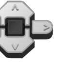

					<table cellpadding="0" cellspacing="0" border="0"><tbody><tr><td>
	
						<h1>程序块按钮模块<a name="top"></a></h1>
		<div id="block_156" class="block blockHeader">
				<table cellspacing="0" cellpadding="0" border="0">
			<tbody><tr>
				<td valign="top" class="image"></td>
				<td valign="top" class="description"><div class="text-wrapper">程序块按钮模块从程序块按钮获取数据，这些按钮是 EV3 程序块正面上的五个按钮（左、中、右、上和下）。可以查明受到按压的按钮并获取数字输出。还可以测试一个或多个按钮以检查是按压、松开还是碰撞了按钮，并获取逻辑（“真”或“伪”）输出。<br>
<br>
有关程序块按钮提供的数据的更多信息和编程示例，请参见<a href="./index.html?id=UsingSensors_BrickButtons">使用程序块按钮</a>。</div></td>
			</tr>
		</tbody></table>
			</div>
	<div id="block_157" class="block blockChaptor">
		<div class="title"><a name="ChooseTheMode" style="position:relative; top:-10px;"></a>选择模式</div>
		<div class="description"><br>
<br>
 模式选择器<br>
 输入<br>
 输出<br>
<br>
使用模式选择器可为模块选择模式。可用<a href="./index.html?id=BrickButton#InputsAndOutputs">输入和输出</a>会因模式而异。下面介绍了模式。</div>
	</div>
	<div id="block_158" class="block blockChaptor">
		<div class="title">模式</div>
		<div class="description"></div>
	</div>
	<div id="block_159" class="block blockMode">
		<div class="title"><a name="Mode_Measure" style="position:relative; top:-10px;"></a>测量</div>
		<div class="description"><br>
<br>
“测量”模式将当前按压的按钮的 ID 输出到<a href="./index.html?id=BrickButton#Value">按钮 ID</a>。</div>
			<div class="links">请参见<a href="./index.html?id=UsingSensors_BrickButtons">使用程序块按钮</a>中的编程示例 3。</div>
	</div>
	<div id="block_163" class="block blockMode">
		<div class="title"><a name="Mode_Compare" style="position:relative; top:-10px;"></a>比较</div>
		<div class="description"><br>
<br>
在“比较”模式中，可以选择在<a href="./index.html?id=BrickButton#Action">动作</a>输入中要测试的按钮的状态（松开、按压或碰撞）。还可以测试按钮集合以查看其中是否有任何按钮与指定状态匹配。<br>
<br>
在<a href="./index.html?id=BrickButton#Buttons">程序块按钮 ID 集合</a>中，选择要测试的按钮或按钮集合。如果所选按钮中有任何按钮与指定<a href="./index.html?id=BrickButton#Action">动作</a>匹配，则<a href="./index.html?id=BrickButton#Result">比较结果</a>将为“真”。与指定动作匹配的按钮的 ID 会在<a href="./index.html?id=BrickButton#Value">按钮 ID</a> 中输出。</div>
	</div>
	<div id="block_166" class="block blockChaptor">
		<div class="title"><a name="InputsAndOutputs" style="position:relative; top:-10px;"></a>输入与输出 <a name="Parameters" style="position:relative; top:-10px;"></a></div>
		<div class="description">可用于程序块按钮模块的输入取决于所选模式。可以将输入值直接输入到模块中。或者，可以通过<a href="./index.html?id=DataWires">数据线</a>从其他编程模块的输出提供输入值。</div>
	</div>
	<div id="block_165" class="block blockTable ">
		<table class="blockTable">
		

			<tbody><tr>
<th>输入</th><th>类型</th><th>允许的值</th><th>备注</th>			</tr>
<tr><td>程序块按钮 ID 集合 <a name="Buttons" style="position:relative; top:-10px;"></a></td><td>数字排列</td><td>（每个元素）0 － 5</td><td>（每个元素）：<br>
0 = 无<br>
1 = 左<br>
2 = 中<br>
3 = 右<br>
4 = 上<br>
5 = 下</td></tr><tr><td>动作 <a name="Action" style="position:relative; top:-10px;"></a></td><td>数字</td><td>0 － 2</td><td>要测试的按钮状态：<br>
0 = 松开<br>
1 = 按压<br>
2 = 碰撞</td></tr>		</tbody></table>
	</div>
	<div id="block_167" class="block blockStep">
		<div class="title"></div>
		<div class="description">可用输出取决于所选模式。要使用某个输出，请使用<a href="./index.html?id=DataWires">数据线</a>将该输出连接到另一个编程模块。</div>
	</div>
	<div id="block_169" class="block blockTable ">
		<table class="blockTable">
		

			<tbody><tr>
<th>输出</th><th>类型</th><th>备注</th>			</tr>
<tr><td>按钮 ID <a name="Value" style="position:relative; top:-10px;"></a></td><td>数字</td><td>按压的按钮：<br>
0 = 无<br>
1 = 左<br>
2 = 中<br>
3 = 右<br>
4 = 上<br>
5 = 下</td></tr><tr><td>比较结果 <a name="Result" style="position:relative; top:-10px;"></a></td><td>逻辑</td><td>比较模式的“真/伪”结果。</td></tr>		</tbody></table>
	</div>
	
			<div id="quick">
				<div class="header"><a href="./index.html?id=BrickButton#header">程序块按钮</a></div>
					<div class="quickText">快速链接</div>
					
					<ul>
	<li><a href="./index.html?id=BrickButton#ChooseTheMode">选择模式</a></li><li><a href="./index.html?id=BrickButton#InputsAndOutputs">输入与输出</a></li>					</ul>
			</div>
	
	</td></tr></tbody></table>